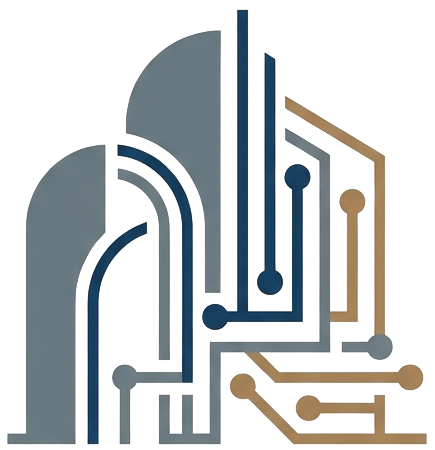

Analisamos sua presença
Verificamos como a clínica aparece no Google, o estado do site atual e o caminho que o paciente faz até falar com a recepção.

Planalto Digital Pedir protótipoSites para clínicas · Brasília e Águas Lindas
Criamos sites para clínicas odontológicas e de estética. E fazemos diferente: você vê o protótipo da sua clínica antes de decidir qualquer coisa.
O primeiro contato
Protótipo primeiro
Em vez de uma proposta cheia de promessas, começamos pelo que importa: o site com a cara da sua clínica.
Verificamos como a clínica aparece no Google, o estado do site atual e o caminho que o paciente faz até falar com a recepção.
Com as informações públicas da clínica, criamos uma primeira versão navegável, pensada para o celular.
Enviamos o link. Você abre no próprio celular, mostra para quem quiser e diz o que achou. Se não fizer sentido, tudo bem.
Aprovado, entram textos, fotos e dados oficiais da clínica. Revisamos juntos e colocamos no ar com seu domínio e o perfil do Google atualizado.
Portfólio
Somos uma agência nova, e preferimos dizer isso de cara. Estes são projetos conceito, feitos para clínicas fictícias, que mostram nosso padrão de trabalho.
O que entra no site
É nele que boa parte dos pacientes vai encontrar você. Por isso, cada tela começa pelo celular e depois se adapta ao computador.
O paciente chega à recepção com uma mensagem pronta, sem procurar número.
Estrutura e textos pensados para quem procura por especialidade e região.
Site, endereço, telefone e horários coerentes no Google e na página.
Espaço para responsável técnico e registro profissional, cuidado com promessas de resultado e formulários alinhados à LGPD. A validação final é sempre da clínica e do seu responsável técnico.
Onde atuamos
Uma cidade que cresce e onde uma boa presença digital ainda pode destacar a clínica. Quando o paciente compara opções no celular, quem se apresenta melhor sai na frente.
Plano Piloto, Águas Claras, Taguatinga, Ceilândia, Samambaia, Gama: cada região tem seu público e sua busca. O site precisa falar com quem está perto da clínica.
Além do site
Clínicas são nosso foco em sites. Em sistemas, atendemos empresas de outros segmentos que perdem tempo com tarefas repetitivas.
Marcação on-line e lembretes automáticos, para reduzir o trabalho manual da equipe.
Triagem das primeiras mensagens e encaminhamento para a pessoa certa, sem substituir o atendimento humano quando ele importa.
Os números da operação reunidos em um só lugar, em vez de espalhados por planilhas.
Quando nenhuma ferramenta pronta resolve, desenhamos a solução em torno do processo da sua empresa.
Dúvidas
Não. O protótipo existe para você avaliar sem compromisso. Só falamos em contratação se você quiser seguir.
Estamos com condições promocionais de lançamento para clínicas de Brasília e Águas Lindas. Você recebe um valor fechado junto com o protótipo, antes de decidir.
Não, e desconfie de quem garante. Entregamos um site tecnicamente preparado para a busca local e ajudamos a alinhar o seu perfil no Google. A posição depende também de concorrência, avaliações e localização.
Sim, principalmente se ele está fora do ar, com defeitos ou difícil de usar no celular. Avaliamos o que dá para aproveitar.
Estamos começando. Por isso, os projetos desta página são conceitos com clínicas fictícias, e o protótipo da sua clínica é a melhor prova do nosso trabalho.

Conte onde encontramos a clínica. Sua mensagem será aberta no WhatsApp para você revisar e enviar.